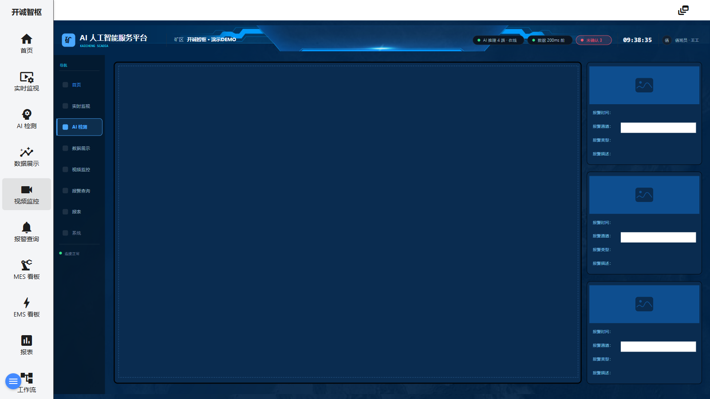

5. 视频监控画面
入口一：左侧菜单「视频监控」（工程画面 v_zc_g4） · 入口二：摄像机管理页 /cameras（标题「视频监控控制台」）
功能概述
「视频监控」有两个层面：工程画面（v_zc_g4）以值守视角展示多路视频与报警抓图预览；摄像机管理页（/cameras）负责摄像机档案的增删改查、连通性测试与实时预览。值守人员日常用前者，维护人员配置用后者。
界面说明

图 5-1 视频监控画面（当前交付版实际截图）
工程画面（v_zc_g4）
| 区域 | 说明 |
|---|
| ① 视频矩阵（左侧主区） | 多路摄像机实时画面，网格排布；画面标题「视频监控画面」。 |
| ② 报警抓图预览（右侧栏） | 多组报警卡，每张列出四项信息：报警时间：、报警通道：、报警类型：、报警描述：，并配报警时刻的抓图，便于回溯报警现场。 |
| ③ 画面内导航 | 同第 1 章④，可点击切换 AI 检测 / 数据展示 / 报警查询等画面。 |
摄像机管理页（/cameras，标题「视频监控控制台」）
| 区域 | 说明 |
|---|
| ④ KPI 卡 | 顶部四张：摄像机总数、已启用、媒体网关（开/关）、AI 分析（启用 AI 的数量）。 |
| ⑤ 视频源列表 | 摄像机清单，含名称、厂商、主机、启用状态等；右上「新建摄像机」按钮；每行操作：预览、编辑、测试、移除。空列表时提示「尚未配置摄像机」。 |
| ⑥ 摄像机编辑器 | 分组表单：基础信息（名称、厂商、主机/IP、RTSP 端口、HTTP 端口、启用、AI 分析）；通道与码流（通道号、主码流/子码流）；URL 模板（RTSP/快照地址，可用变量 {user} {pass} {host} {port} {httpPort} {channel} {subtype} {channelId}）；凭据（用户名、密码、认证方式）；选项（分组、备注、预览帧率）；视数融合（OSD 字幕叠加、在线状态变量、AI 结果接入地址 WebSocket/MQTT、立即轮询）。 |
逐步操作
值守浏览（工程画面）
- 点击左侧菜单「视频监控」，进入视频监控画面。
- 在②区右侧栏浏览最近报警抓图：读「报警时间/报警通道/报警类型/报警描述」，与左侧对应通道的实时画面相互印证。
- 点击画面内导航切换到「报警查询」查看报警明细（第 6 章）。
新增一台摄像机（管理页）
- 进入方式任选：在视频墙/MES 等页面顶部点摄像机按钮（videocam 图标，悬停提示「视频监控」）；或在系统类页面点「设置」打开设置对话框后选择「视频监控」；或直接访问
http://127.0.0.1:1881/cameras。
- 点击「新建摄像机」，在编辑器「基础信息」中填写名称（如：车间 A 入口）、厂商、主机/IP，勾选「启用」。
- 在「通道与码流」选择通道与主/子码流；「URL 模板」可留空使用厂商默认模板。
- 在「凭据」填入摄像机的用户名/密码；「选项」里可设置分组与备注。
- 点击「测试」：显示「摄像机可达」即配置正确；显示「摄像机不可达」时检查 IP、端口、账号。
- 保存后列表出现新行；点「预览」可查看实时画面。
启用 AI 叠加
- 编辑该摄像机，勾选「AI 分析」。
- 填写「AI 结果接入地址（WebSocket/MQTT）」指向推理服务。
- 保存后，在视频墙（第 2 章）打开「AI 检测框」即可看到识别框。
提示与常见问题
- 「测试摄像机需要填写密码」？ 测试连通性必须提供凭据；密码留空表示沿用已保存密码。
- 自定义厂商必须填模板？ 是。厂商选「自定义」时，RTSP 或快照模板至少填一项，否则无法保存。
- 预览不可用？ 先「保存摄像机再预览」；媒体服务器未启用时部分厂商仅支持快照预览。
- 在线状态怎么联动？ 在「视数融合」里配置「在线状态变量」，摄像机会把 1=在线 / 0=离线 写入该 SCADIA 变量，供画面或报警使用。
← 上一章 · 返回目录 · 下一章 →